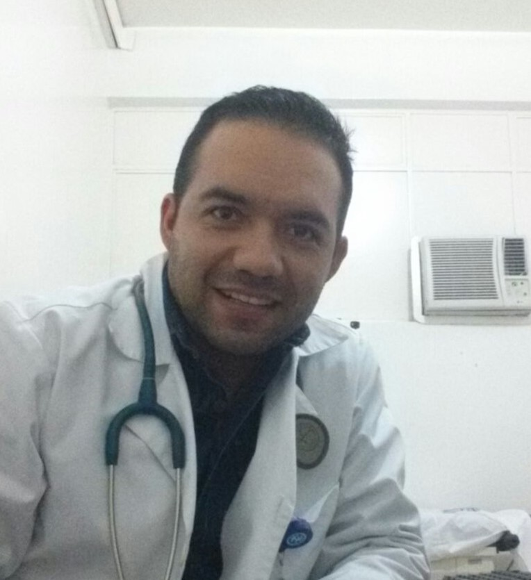
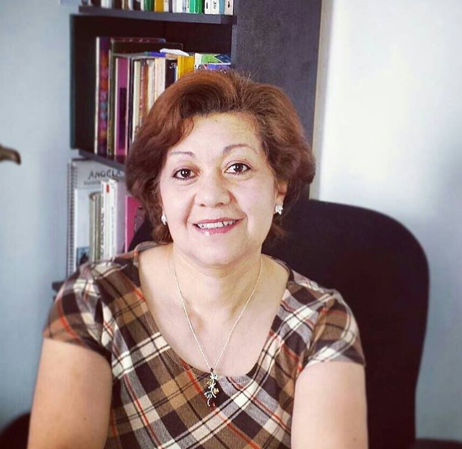

Filósofo y candidato a Magíster en filosofía - Universidad de La Salle, experto en cultura de la felicidad y de la paz. Director de la Escuela de Gobierno Red Diálogo de Saberes –REDISAB. Fue profesor universitario y director de la Corporación Oasis – Centro de Estudios sobre la democracia y el fortalecimiento de la sociedad civil. Autor de las obras: Las Huellas de la Esperanza. Editorial Amha 1984 Estrella del Alba Galgallim Ediciones 1.999.
311 540 3736
raul.guzman@pafmi.org

Rodrigo Alejandro Méndez Guzmán - Director Área de Salud
Doctor en medicina de la Escuela Latinoamericana de medicina la Habana Cuba, experto en procesos de humanización de la salud, en políticas públicas del Vivir Bien y en atención a enfermedades prevalentes de la infancia, con énfasis en atención integral en salud a víctimas de violencia sexual.
313 407 1596
rodrigo.mendez@pafmi.org

Luz Elena Guzmán González - Directora Área de Educación
Licenciada en ciencias de la educación con especialidad en psicología y pedagogía Universidad Externado de Colombia, especialista en Educación y Orientación Familiar Fundación Universitaria Monserrate, experta en atención a la primera infancia.
321 453 8907
luz.guzman@pafmi.org
María Mercedes Hernández Henríquez - Directora de Investigación
Doctora en Filología Clásica por la Universidad Autónoma de Madrid en el programa Gramática General y Comparada. Humanista de formación con conocimientos y experiencia en comunicación y liderazgo para la cultura de la felicidad y la paz. Directora del Área de Humanidades de la Fundación Universitaria de Colombia – Uniagraria. Julio 2013 a junio de 2015. Participó en la publicación del Poemario Diez Mujeres Poetas Cantan a la Tierra. Lanzamiento abril del 2015.